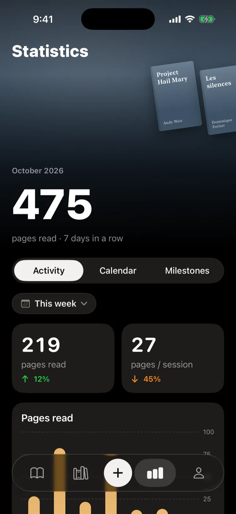
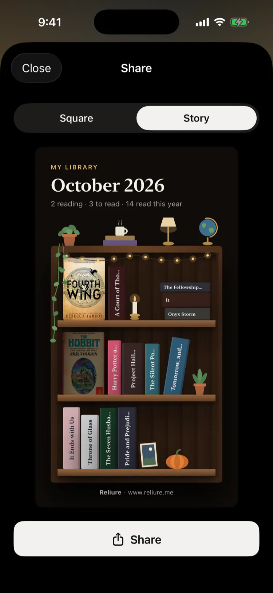
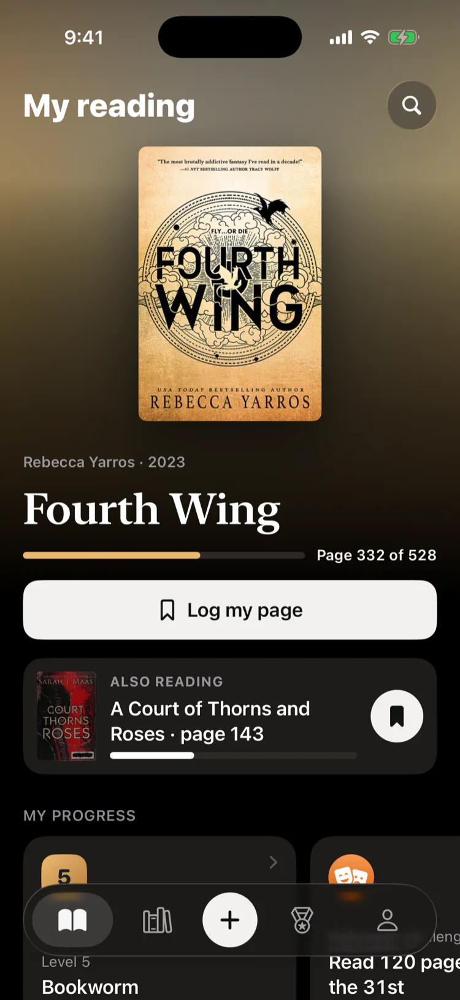
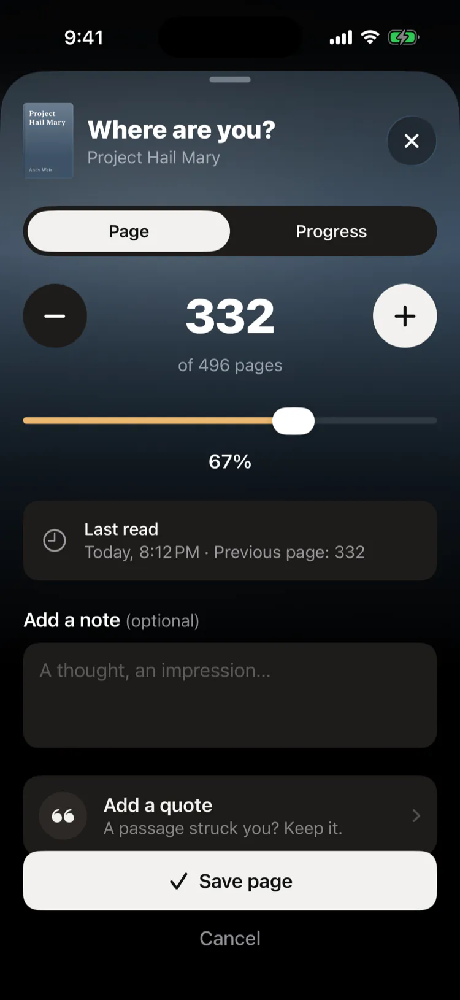
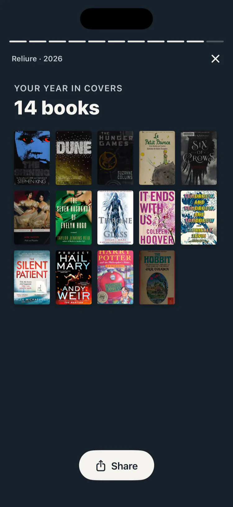
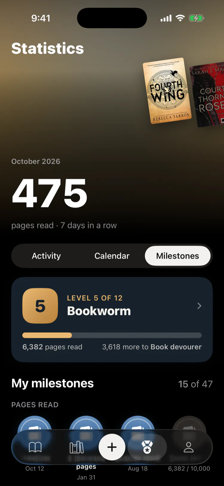

Your reading life, bound together
Free. No account, no ads, no subscription.






Features
Scan
Add a book from its barcode
Pages
Update your page in a tap
Quotes
Photograph a page, keep the passage
Ratings
Overall or by theme
BookTok
Tropes, spice and series
Statistics
Pages, streaks, authors and goals
Bookcase
Your books of the moment, on shelves
Levels
Twelve levels and a monthly challenge
Next read
Let chance pick your next book
Widgets
Your book on the Lock Screen
Share
A book or your year, as an image
Wishlist
Gift ideas, ready to send
iCloud
Your books on all your devices
Goodreads
Import your library, export anytime
Free
No account, no ads, no subscription
Reading tracker for iPhone
Available on the App StoreOpen Reliure on the App Store with your iPhone camera
Frequently asked questions
Reliure
What is Reliure?
Reliure is an iPhone app for tracking the books you read: your library, your current page, your reading sessions, notes, ratings, reading statistics and reading calendar.
Account
Do I need an account?
No. Reliure works without an account or sign-up. Your library is stored on your iPhone and synced through your own iCloud.
Price
Is Reliure free?
Yes. Reliure is free, with no ads, no subscription and no account. Some bookstore links, such as Amazon, may be affiliate links: we may earn a small commission, at no extra cost to you.
Adding books
How do I add a book?
Scan the ISBN barcode with your camera, search by title or author, or enter the ISBN by hand. Reliure looks up the book’s details in Google Books, Open Library and the catalogue of the Bibliothèque nationale de France.
Progress
How do I track my progress?
Enter your current page or a percentage, or adjust it with + and −. Each update is saved as a reading session, which feeds your statistics and reading streaks.
Backups
What if I change or lose my iPhone?
If you’re signed in to iCloud, your library comes back on its own on your new iPhone, with your goal, your challenges and your milestones. You can also export a Reliure backup file at any time, with your books, sessions, quotes, notes and covers, and restore it on another iPhone. The app gently reminds you when a backup is due, with no notifications.
Export
Can I take my books to another app?
Yes. Reliure exports your library to a CSV file in the Goodreads format, which Goodreads and StoryGraph can import.
Goodreads
Can I import my Goodreads library?
Yes. Export your library from Goodreads as a CSV file, then import that file into Reliure.
Sharing
Can I share my reading?
Yes. Share a book, a quote, your bookcase, your reading calendar, a milestone or your year in reading as an image, square for a post or tall for a story, through Instagram, Messages or any app on your iPhone. You can also send your wishlist as a list of gift ideas, with a link to buy each book.
BookTok
Can I track tropes and spice, like on BookTok?
Yes. Reliure speaks BookTok: tag each book with its tropes, like enemies to lovers or found family, rate its spice from Mild to Scorching, and see your favourite tropes of the year in your statistics. Books from the same series are grouped together, in order, with the next volume to read.
Next read
Can Reliure help me choose my next book?
Yes. Spin the wheel and let chance pick among your books to read, or among books from Open Library by the authors you loved and in the genres you read most.
Languages
What languages is Reliure available in?
English and French.
Android
Is Reliure available on Android?
No. Reliure is available for iPhone.
Offline
Does Reliure work offline?
Yes. Everything works without a connection, except looking up a book online by barcode, title or author, and suggestions from Open Library. You can always add a book by hand.
Formats
Can I track ebooks or audiobooks?
Reliure is designed for print books, with your progress tracked by page.